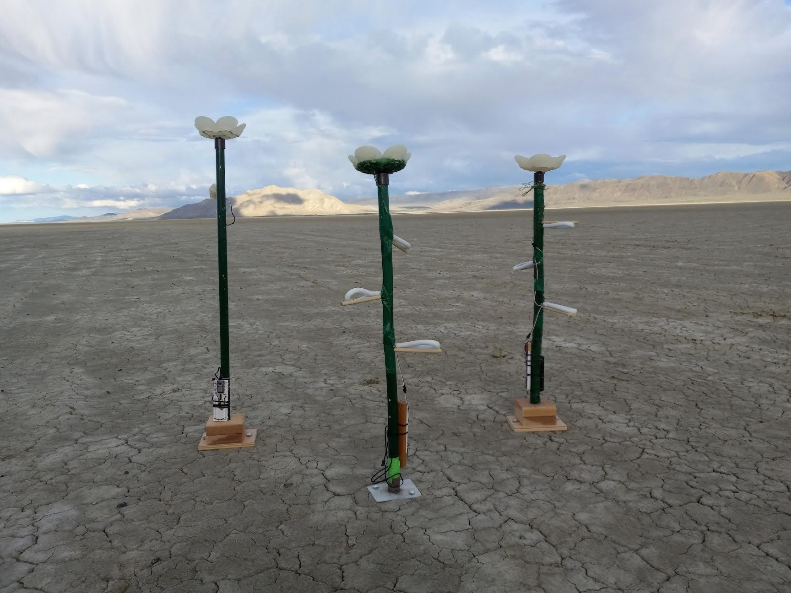
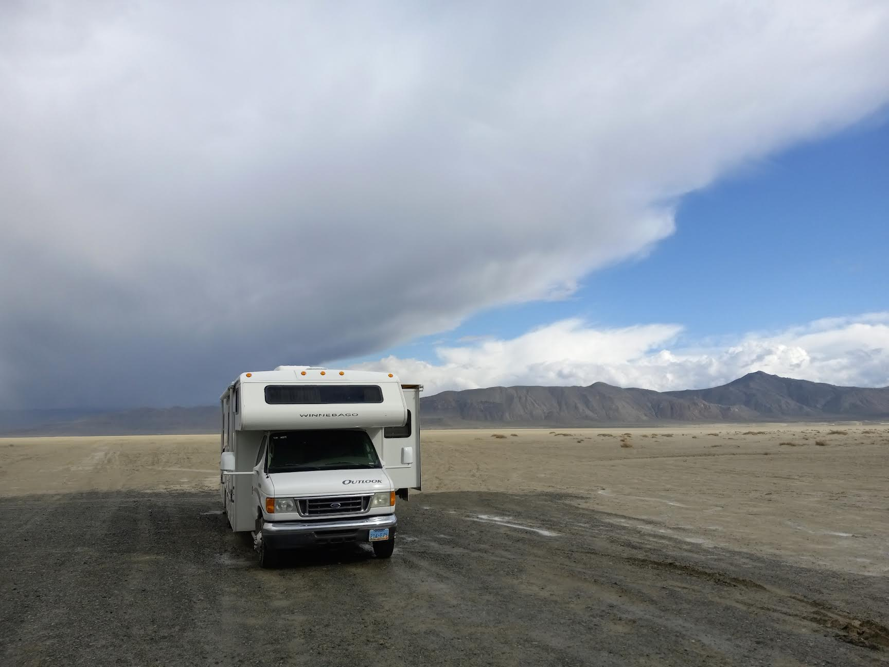
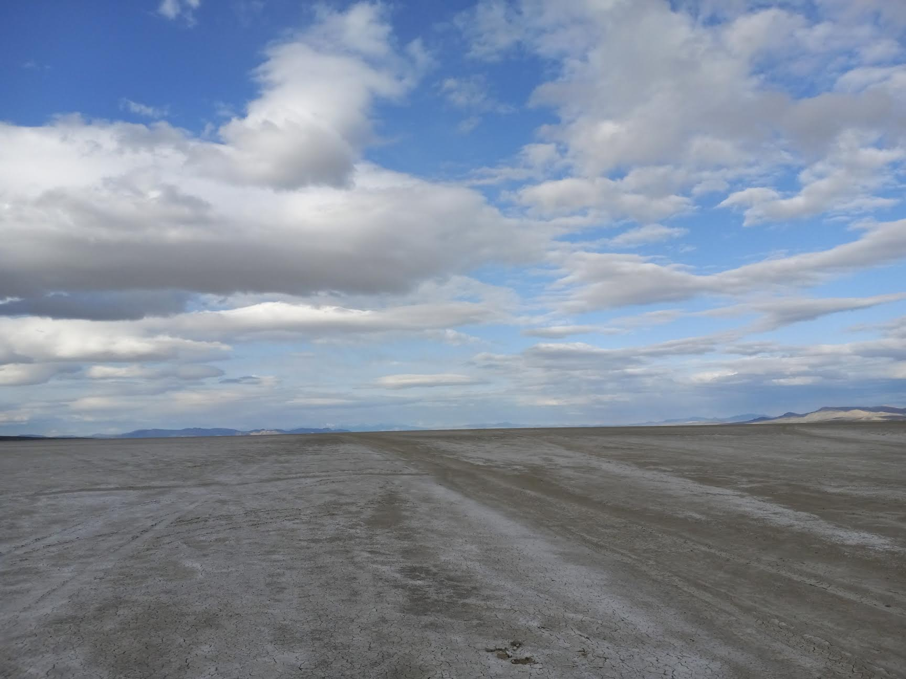
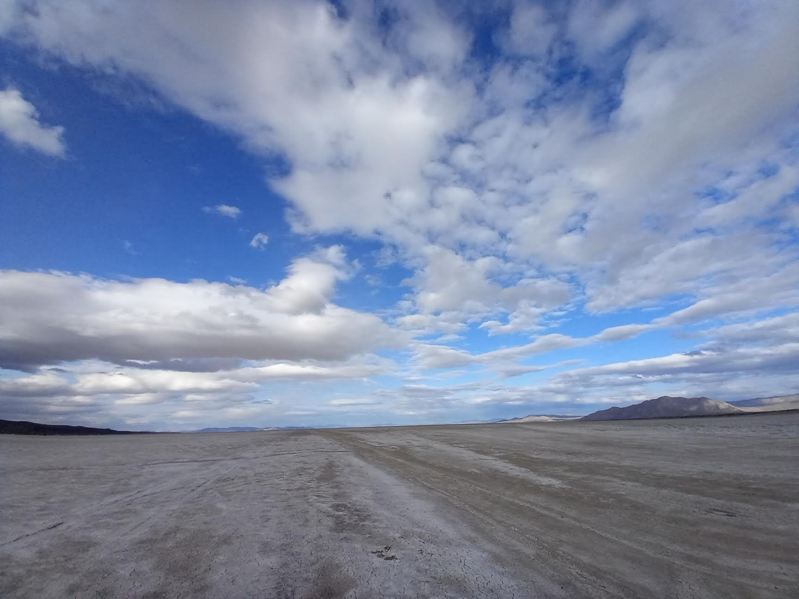

Playa happens.
Like most well-told tales, the best playa stories start with a whimsical hook meant to engender
interest and attentiveness amongst the chosen audience. Many veteran burners can pontificate at great
length about the time their tent became an impromptu balloon and flew, cracking and cackling like
Babayaga in her cauldron towards the Black Rock. Your storyteller may instead choose to describe that
one very specific instance where the nighttime temperatures dipped so low as to create beautiful
fractals in their water source in a scene somewhat more reminiscent of a post-apocalyptic thriller flick
than an actual occurrence. Remember, though, that all playa stories are true…from the right point of
view.

We slogged through the soft putty that was Black Rock Desert in early May. Each laborious step
was accompanied by a sad, slurping sound that seemed to both mock and mourn our now-destroyed
footwear. Nearby, several sets of tire tracks evidenced repeated and truly comical attempts to ford the
sticky morass. Had these errant motorists escaped with their lives and dignity intact?

At a distance that seemed like leagues from the muddy shoe that marked the center reference
point of our endeavor, we planted our stakes and began our field test. A test space took shape,
delineated by glow sticks and lag bolts that we had perhaps laughingly “drilled” into the surface of playa.
The field, some 100 feet squared, provided a representative space with which we could test the
power and resolution provided by the trio of infrared flood lights that had been placed quite expertly on
the roof of a blessedly unmired RV. Our camera specialist and technological mastermind, George, had
bravely positioned himself atop this steel redoubt above the muck, shouting orders and corrections to
his minions below over the gusting winds of a region that still believed itself in the clutches of a most
confusing winter. Children and adults alike capered within the sodden test field as if on the strings of a
mad puppeteer as the IR floods were moved to various positions. All while the rain, and our hopes of
ever feeling solid ground once more, fell…

Our field test, as you now understand, ran afoul of some odd weather in northern Washoe
County in the great state of Nevada. We were, however, able to collect some excellent information
during our test cycle, both during the day and at night.

First, the winter-marred surface of playa created a number of images within the recognition
software that are remarkably similar to human faces. These confounding visages appeared both in the
original test footage that was collected on Treasure Island and in the second set of test images collected
on-site while aboard Black Rock Desert. This information is very useful as it will allow George to set the
fidelity levels of the software more accurately in order to better service our needs for veritable
identification of human participants during Burning Man 2023.
Second, were learned that playa is somewhat reflective under IR illumination. During the later
stages of this field rest, the prevailing winds had created a crusty surface of playa dust, like icing atop
frosting. We intend to repeat our field test in late June, during which time we hope to determine just
how reflective the fully dried surface of playa is and, if need be, by which methods we can cancel these
reflective properties as they interact with our software.
Third, we positively confirmed that three IR floods will not be enough to properly illuminate our
area of interactivity. In order to fully illuminate our dusty flower garden, we estimate that a total of six
IR floods of similar power level as the originals will be required. Not only will this provide for a more
significant level of illumination with which the camera and software may work, but we will be able to
expand the perceptive perimeter of the Field of Flowers to allow for advance tracking of any participants
before they reach the edge of the flowers themselves.
Overall, this initial test was a huge success and provides a bevy of new information with which
we can continue to refine and expand the future capabilities of this art project, the Field of Flowers.